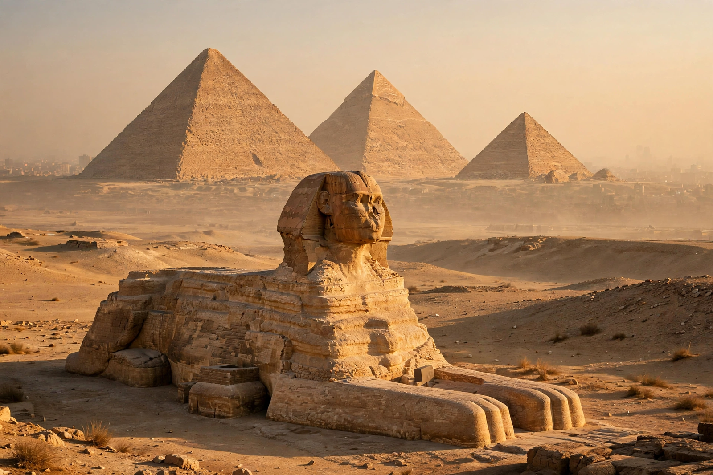

Giza pyramid complex
| Giza pyramid complex | |
|---|---|
 | |
| Location | Giza Plateau, Greater Cairo, Egypt |
| Period | Fourth Dynasty, Old Kingdom, c. 2600–2500 BC |
| Principal monuments | Pyramid of Khufu; Pyramid of Khafre; Pyramid of Menkaure; Great Sphinx |
| UNESCO | World Heritage Site (part of "Memphis and its Necropolis", inscribed 1979) |
The Giza pyramid complex (Arabic: مجمع أهرامات الجيزة) is an ancient Egyptian necropolis on the Giza Plateau, on the western edge of the Nile valley some 13 km southwest of central Cairo. Built during the Fourth Dynasty of the Old Kingdom, around 4,500 years ago, it contains the three great pyramids — of Khufu, Khafre and Menkaure — together with the Great Sphinx, temples, causeways, subsidiary pyramids, cemeteries and a workers' town. The Great Pyramid of Khufu is the oldest and last surviving of the Seven Wonders of the Ancient World.
The pyramids
The Pyramid of Khufu (the Great Pyramid), built c. 2580–2560 BC, originally rose 146.6 m and remained the tallest human-made structure on Earth for more than 3,800 years. Composed of some 2.3 million blocks, it contains the King's and Queen's chambers, a grand gallery and — discovered by radar surveys — internal voids still being investigated. The Pyramid of Khafre, slightly smaller but on higher ground, retains a cap of its original smooth Tura limestone casing near the summit; the Great Sphinx, carved from a single ridge of bedrock with a lion's body and a king's head, guards its causeway. The Pyramid of Menkaure, the smallest at 65 m, was partly cased in red granite.
Construction
Modern Egyptology holds that the pyramids were built by paid, rotating crews of Egyptian workers — not slaves — housed in a purpose-built town excavated southeast of the plateau, and fed on bread, beer and meat on an industrial scale. Blocks were quarried locally, fine casing stone ferried across the Nile from Tura, and granite brought 800 km from Aswan; ramps, sledges and water-lubricated sand aided transport. The diary of an official named Merer, found at Wadi al-Jarf, records boat crews hauling casing stones to "Akhet Khufu" in the pharaoh's reign.
Later history and tourism
The necropolis was plundered in antiquity and the Middle Ages, dug by early explorers such as Giovanni Belzoni and colonel Howard Vyse, and scientifically excavated from the late nineteenth century by Flinders Petrie, George Reisner and others. Today Giza is Egypt's most visited archaeological site, protected as part of the UNESCO World Heritage listing for Memphis and its Necropolis, with the new Grand Egyptian Museum standing on the plateau's edge. The pyramids align closely to true north and, famously, their arrangement has inspired theories — scientific and fringe alike — about astronomical correlations with Orion's Belt.